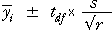

Confidence intervals for treatment means
If an analysis of variance test concludes that there are differences between the g treatments in a randomised block design, we must report estimates of the treatment means to help assess which are most different.
The simplest way to assess differences is with 95% confidence intervals for each of the treatment means. If there are r observations for each treatment (so the total sample size is n = rg), the appropriate 95% confidence interval for the treatment mean has a similar form to that for a completely randomised experiment (no blocks),

In both the completely randomised and randomised block designs, s is our best estimate of the unexplained standard deviation, which is the mean residual sum of squares from the relevant anova table,

In a randomised block design, block effects are removed in addition to treatment effects, so there can be much less unexplained variability and s can be much smaller. The degrees of freedom for the t-value, df, are those associated with the residual sum of squares in the relevant anova table.
If the block effects are large, s is likely to be much smaller when the data are analysed as a randomised block design rather than a completely randomised design. Therefore:
Confidence
intervals are also likely to be much narrower.
Codeine and acupuncture for dental pain relief
The diagram below shows the pain relief score for the 32 subjects who were each given one of four treatments (combinations of codeine and acupuncture). They were grouped into blocks of four according to an initial assessment of their pain tolerance and the treatments were randomly allocated to the four subjects in each block. (I.e. a randomised block design was used.)
Click Show 95% confidence intervals for means. Initially the confidence intervals are found ignoring the blocking of the data — as though the data were from a completely randomised design. Observe that there is considerable overlap between the confidence intervals.
Select Correct analysis taking account of blocks from the pop-up menu. Much of the residual variation is now explained by differences between the blocks of subjects, so the estimated residual standard deviation, s, is decreased, resulting in much narrower confidence intervals.
Although we are still uncertain about the difference between the treatments Acupuncture and Codeine, there is now a clearer picture of the differences between all other pairs of treatments.